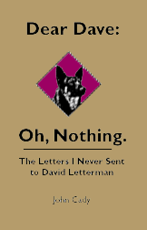

|

Dear Dave:
Oh, Nothing.
the letters I never sent
to David Letterman
Dave Letterman is a pretty popular guy these days, more so even than when I wrote this book three years ago.
The book is an account of my mission to send Dave countless letters for his mailbag, letters I assumed would be read on his show, letters which would endear me to Dave, his family and perhaps even that woman who breaks into his house.
Join me in my quest for the coveted "Friend of Dave" grail; you might learn some valuable lessons. I know I have.
Table of Contents
- The Beginning -- (read this first) What, Where, and When
- Phase I: The First Few Letters
- The How and Why of Writing
- Phase II: Dave and I Are Pals
- Thinking Ahead: When I've sent the letters, what comes next?
- Phase III: The Adolescence of My Writing
- Sending the Letters: Not as easy as it looks
- Phase IV: Resolution With Dave
- A Cure for My Malady
Dear Dave: Oh, Nothing © 1993-1997 by John Cady and the Lounge Life Press
credits & disclaimer
other books by John
|